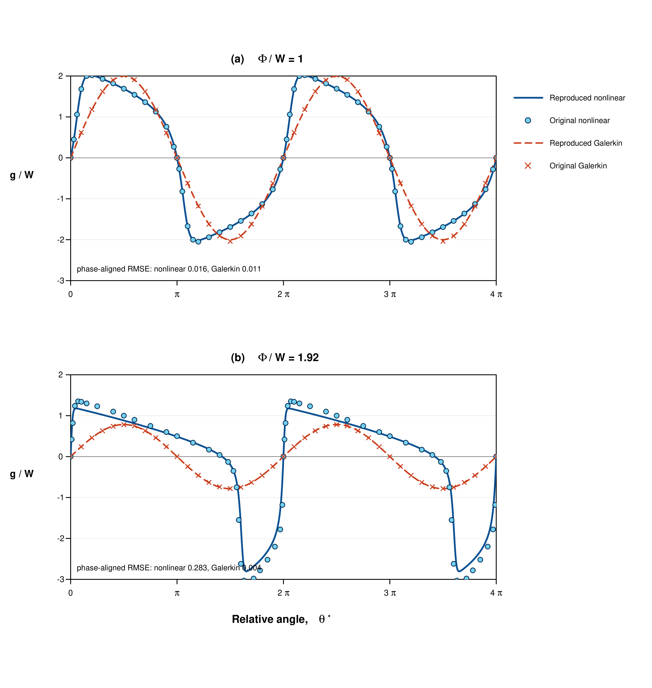

A comprehensive log of work done throughout 16.S893.
Rebuilding my project workflow.
After working on my project using only Codex as the agent, my project code became bloated to the point where any change created more problems than solved. I thus restarted from scratch using the project structure taught in this class, using agents and subagents with skill and tool files.
I first started with a skill file that is referred to before every and any response by any agent in the project. This skill file specifies response outputs that are concise and includes no jargon, and if specialised terms are necessary, they must be defined to the (human) user. This was an issue I was having previously with Codex, especially at higher context window percentages, where the responses would become very generic and full of jargon. Implementing this skill substantially improved the responses of the agents.
Then, I implemented a planner agent and a plan-executer agent to plan and execute plans with consistency. The planning agent must always be Opus-level to ensure the formulation of high quality plans, and they are instructed to divide tasks to Sonnet-level items. The plan-executer agent is also Opus-level, but they then delegate the Sonnet-level tasks to Sonnet-level subagents that run in parallel. There is also a coding skill that they refer to that specifies no excess complexity and no performative rigour that introduces more problems than solves or prevents.
I also made a plotter agent to make plots with consistent formatting via PyTecplot and Tecplot360. Similar to the plan-executer agent, the plot is formulated by an Opus-level agent and the plotting task is delegated to Sonnet-level agents that follow deterministic tool files.
Overall, I’ve spent about $80 in API costs which is not cheap but has been well worth it as it has enabled me to perform extremely consistent, targeted and most importantly sustainable code development that I can maintain oversight of.
Developing testing ideas for the course project.
Whilst I have not implemented a test yet as I have to finalise the scientific approach to my source and vorticity field project with my advisor later today, I have two ideas that may be appropriate for a range of eventual implementations. First, with anything involving sources/sinks and vortices, Green's theorem is a good check in the sense of calculating the circulation along and flux through a curve that wraps around the point. The tolerance for this check would be of a magnitude larger than the magnitude of numerical noise. Another broader check would be to calculate the residual (difference) of the simplified source and vorticity field representation against the ground truth CFD solution. Perfect agreement between the two are not expected due to the fact that the source and vorticity field representation is inherently a simplification of the CFD solution, but a tolerance several orders of magnitude smaller than the normalised state variables would likely be a useful starting point.
Reconstructing a nonlinear compressor stall figure.
This assignment was to reproduce a figure from a scientific paper. As I've been examining compressor rotating stall for the past two years, I decided to look into Moore and Greitzer's 1986 paper on post-stall compressor operating behaviour. The paper's equations outline analytical Galerkin equations, as well as equations for the nonlinear travelling wave problem, which were both solved using MATLAB (written by GPT 5.6 Sol) and plotted over the original data (digitised by GPT 5.6 Sol). The most interesting learning is that one of the four curves involves an adjustment to the nonlinear equations that was mentioned but not fully specified in the paper, which meant that the reproduced results did not perfectly overlap with the original plot.

Calculated nonlinear and Galerkin curves overlaid with digitised points from Moore and Greitzer (1986), Figure 5.
Developing a scientific plotting skill.
The class emphasises the importance of having a skills markdown file when using AI agents. I established a SKILL.md file containing my requirements and preferences for generating scientific plots. In doing this, I realised the importance of having robust human oversight over the writing of a skills files, rather than giving autonomy to AI agents.
Adding a dev-log to the site.
A dev-log page was a requirement of this class to track the work done by ourselves and AI agents. I initially misinterpreted this dev-log as document specifically to log the contributions of the AI agents, including prompts and tool-call counts. As such, the development of this dev-log page, via GPT 5.6 Sol, has gone through several iterations over a couple of weeks.
Building the course website.
The first assignment was the build a portfolio website for the course using Pi. Using API provided by MIT Parley, I expressed my broad vision of the website to Pi, and supplied information for the personal and research contents of the website. The agent, GPT 5.6 Sol, one-shot the website, although it should be noted that I ensured the input prompt was thorough and targeted.